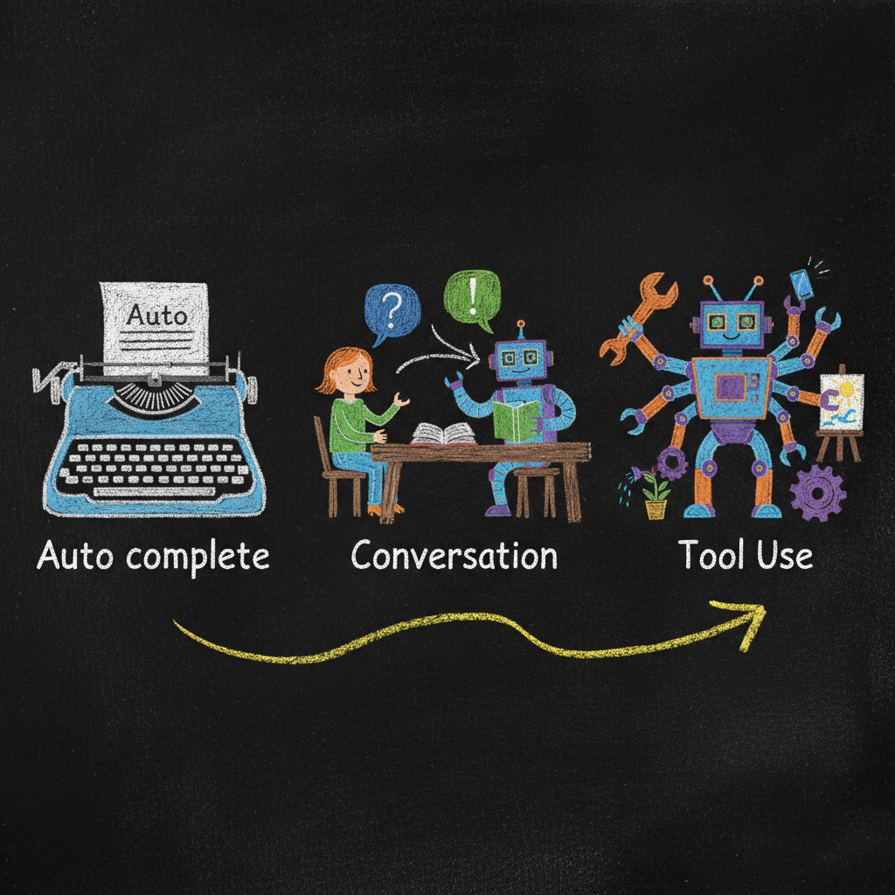
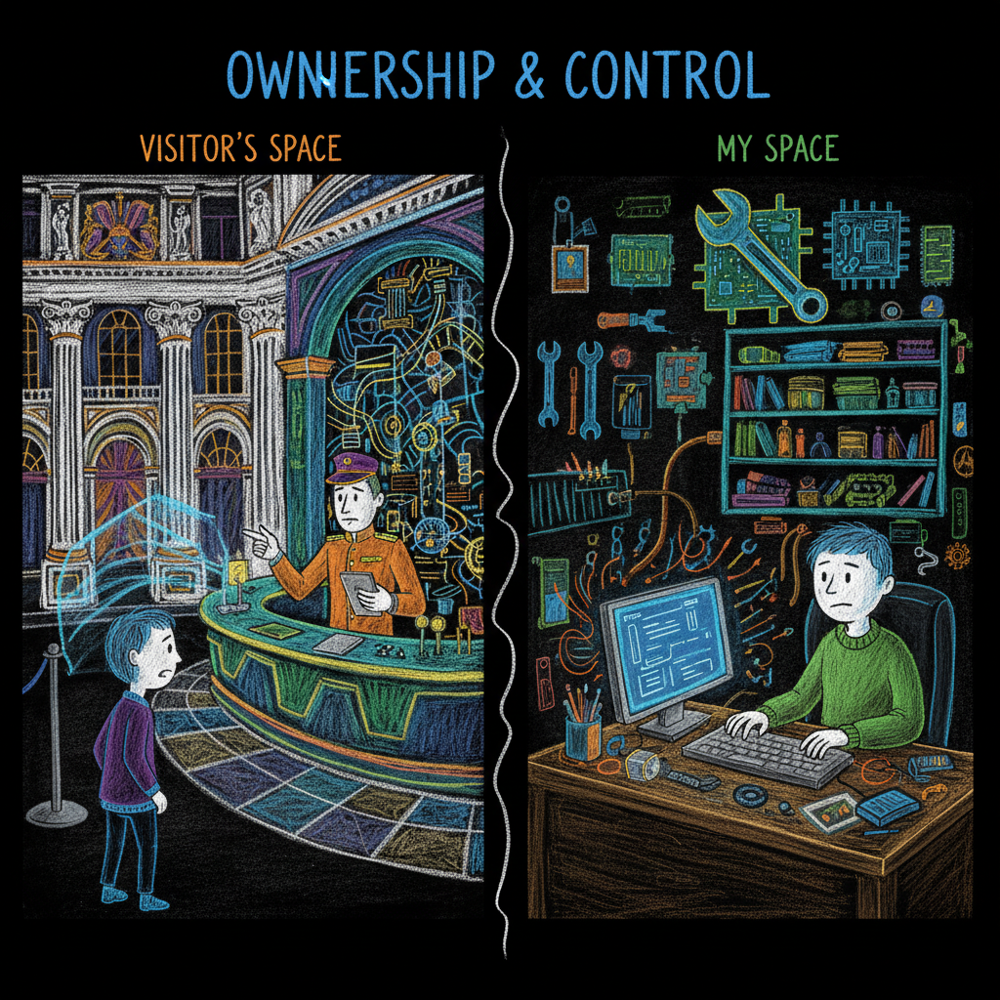
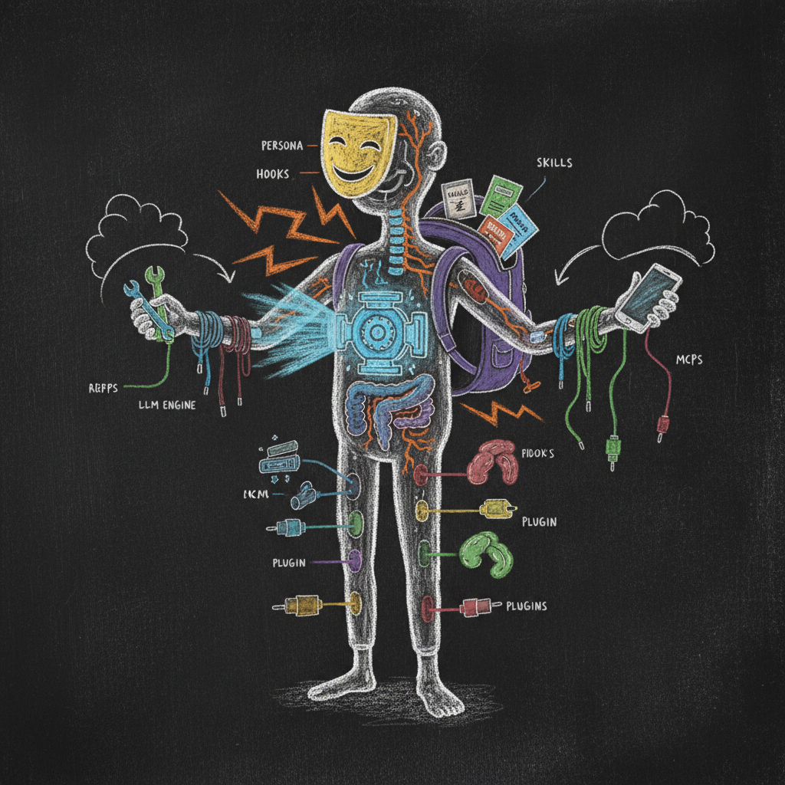

The Language of Agents
Every industry builds a wall of jargon. AI built one faster than any industry in history. This post hands you the keys.
You already use AI. You open ChatGPT, or Claude, or Gemini in your browser. You type something. It types back. You have been doing this for a year, maybe two. You are not new here.
But then you read an article — or overhear a conversation — and suddenly people are talking about LLMs and context windows, hooks and MCPs, prompt engineering and seed agents. The words stack up fast. Nobody stops to explain them. They assume you already know.
You do not. And that is not your fault.
The AI industry moves at a speed that makes even insiders dizzy. New terms appear every month. Old terms shift meaning. The vocabulary is a moving target, and the people using it rarely bother to define it for the rest of us.
This post fixes that. One read. Every word that matters. By the end, you will not just understand these terms — you will see how they connect into a single, coherent picture.
No prerequisites. No code. Just the language you need to stop feeling lost.
The Engine: What an LLM Actually Is
Start with what you already know. When you type a question into ChatGPT or Claude, something generates the response. That something is a Large Language Model — an LLM.
An LLM is a program that generates text. That is it. It does not think, not in the way you think. It predicts what text should come next, one piece at a time.
Those pieces are called tokens. A token is roughly a word — sometimes a whole word, sometimes part of one. When you see the response appearing word by word on your screen, you are watching the LLM generate tokens.
Here is the part most people miss: the LLM did not arrive in its current form. It evolved through distinct phases, and each phase changed what AI could do.
Phase One: The Autocomplete Machine
The earliest LLMs were trained on massive amounts of internet text. Their job was simple: given some text, predict what comes next. Think of it as autocomplete on steroids. You type “the cat sat on the” and the model predicts “mat.” Impressive at scale. Useless for conversation.
Phase Two: The Conversation Machine
Researchers figured out how to train these autocomplete engines to take turns. One turn for you, one turn for the AI. User and assistant, back and forth. This was the instruction phase — the LLM went from replicating text found on the internet to generating text that looks like a conversation.
This is when chatbots became useful. ChatGPT launched. Millions of people started typing questions and getting answers. The AI felt like it was talking to you.
It was not. It was generating tokens that pattern-matched conversations from its training data. But the result was close enough to be transformative.
Phase Three: The Tool-Using Machine
Then the vocabulary expanded.
Researchers introduced special tokens — internal markers the LLM learned to generate at the right moments. Tokens like <thinking> that told the system to reason before answering. Tokens like <tool_call> that told the system to use an external tool — search the web, read a file, run a calculation.
The text the LLM generates stopped being just conversation. It became a mix of conversation, reasoning, and instructions to external systems. The LLM was no longer just talking. It was acting.
This is where we are now. The engine generates tokens. Some tokens are words you see. Some tokens are commands you do not see. All of them are text.

The Context Window
One more engine concept. Every LLM has a limit on how much text it can see at once. That limit is the context window — measured in tokens.
Think of the context window as a desk. Everything the AI knows right now is spread across that desk. Your question, the system’s instructions, previous conversation, file contents, tool results — all of it competes for space on the same desk.
When the desk fills up, old information falls off. The AI forgets.
This is why raw LLMs — no matter how powerful — have limits. A bigger desk helps. But a bigger desk is not the same as a filing cabinet. The desk is temporary. The filing cabinet is permanent. That distinction matters enormously, and we will come back to it.
From Browser to Desktop: CLI Agents
Now the important part.
The AI you use in your browser — ChatGPT, Claude, Gemini — runs on someone else’s servers. You visit a website. You type. It responds. These tools are good. They remember conversations now. They learn your preferences over time.
But here is the catch: you do not control how any of that works. The company decides what gets remembered, how the AI behaves, what it can and cannot do. You are a guest in their house — their rules, their design, their boundaries.
Every one of those companies also offers the same AI as a tool that runs on your computer. Same models. Same intelligence. Same subscription plans. But instead of living in a browser tab, it lives on your machine.
That tool is a CLI agent.
CLI stands for Command Line Interface. It is the text-based program on your computer — the terminal. You open it, you type, the AI responds. No buttons. No menus. Just text.
It sounds less fancy than a browser interface. Capability-wise, the two are converging — the browser version and the CLI version are approaching the same intelligence. The difference is not power. The difference is control.
A CLI agent is yours to customize, expand, and personalize in any direction you want. You decide how it remembers. You decide what it can access. You decide its personality, its rules, its boundaries. You can even add a graphical interface on top if you prefer one. The point is not the interface — the point is who is in charge.
And because a CLI agent lives on your machine, it can see your files. It can read documents, write new ones, search through folders, edit code, and organize your work. It is sitting inside your computer, looking at what you are working on.
And here is the key: every folder on your computer can become a unique agent.
Open a terminal in your legal case folder — the agent becomes your legal assistant, with access to every document in that case. Open a terminal in your marketing folder — same AI, completely different context, different personality, different memory.
The AI in your browser is a service you use. A CLI agent is a tool you own.

That is the shift. From using an assistant the company designed for everyone, to owning one you design for yourself. Same intelligence underneath. Completely different level of control on top.
The Briefing: System Messages and Persona
When you start a conversation with an AI — browser or CLI — something happens before you type your first word.
The system sends the AI a set of instructions. This is the system message (sometimes called a system prompt). You never see it, but it shapes everything the AI says and does. And this is where the control difference between browser AI and a CLI agent becomes very concrete.
In a browser, the system message is written by the company. It says things like “You are Claude, a helpful assistant made by Anthropic. Be safe, be helpful.” You cannot change it.
In a CLI agent, you write the system message. It lives in a file — usually called CLAUDE.md or AGENT.md — right there in your project folder, where you can read and edit it.
That file is the agent’s persona. Not just a name. Its role, its rules, its memory, its priorities. A lawyer’s agent might have a persona that says: “You are a legal research assistant. Always cite sources. Never give legal advice directly — present findings and let the human decide.” A consultant’s agent might say something completely different.
And as your agent grows, its identity spreads beyond a single file. Instructions, memory, and personality naturally expand across multiple files and mechanisms — the way a person’s character is not stored in one place but expressed through habits, knowledge, and experience built up over time.
Same AI engine underneath. Completely different behavior on top.
The system message is where the agent gets its identity. And in a CLI agent, that identity is yours to shape.
The Craft: From Prompt Engineering to Context Engineering
You have probably heard the term prompt engineering. It means carefully crafting what you type to get better results from the AI.
Prompt engineering works. It matters. But it put the burden on you. Learn the right phrasing. Structure your request just so. Add the right context manually. The better you got at prompting, the better your results. That kept AI useful mostly for developers and tech-savvy people — the ones willing to learn a new way of talking to a machine.
The field is moving toward something broader: context engineering. Instead of expecting the user to craft the perfect prompt, you design the entire information environment so the AI performs well regardless of how the user asks.
Context engineering does two things prompt engineering alone never did. First, it internalizes the prompting layer. The careful phrasing, the structured instructions, the right context — all of that gets built into the architecture itself. Internal LLM calls inside a complex system still use prompt engineering, but the user does not have to. You just ask. The system handles the rest.
Second, it expands the focus beyond just talking to the LLM. Think of it as a metabolism. Everything that flows through the AI — your prompts, its own reasoning, results from tools it uses — all of it is information that gets processed. Good context engineering means those tokens are properly absorbed into the agent’s long-term memory and properly recalled when they are needed. The token generator has been invented. The real work now is building the rest of the system so those tokens are properly metabolized.
What files does the agent see? What instructions does it receive at startup? What tools can it use? What rules does it follow? What memory does it carry from previous sessions?
Prompt engineering is choosing your words carefully. Context engineering is designing the room so that a simple request is enough — the desk, the filing cabinets, the rulebooks on the shelf, the locks on the doors. The prompting still happens. It just happens inside the architecture, not inside your head.
For a non-technical professional, context engineering might sound intimidating. It is not. It starts with a single text file — the system message. You describe who the agent is and how it should behave. Everything else grows from there, naturally, through conversation.
The Reflexes: Hooks
When you drive a car, you do not think about checking your mirrors. You just do it. It is a reflex — an automatic action triggered by a specific moment.
Hooks are an agent’s reflexes.
A hook is a rule that fires automatically at a specific moment in the agent’s workflow. Before the agent edits a file — a hook can check if that file is allowed to be changed. A signed contract from a client? The hook blocks the edit, every time, no exceptions. After the agent finishes a task — a hook can log what happened. When the agent tries to stop working — a hook can say “not yet, you still have unfinished work.”
In a well-designed seed agent, you do not code hooks — you describe them. “Before any file is deleted, ask me for confirmation.” “After every task, save a summary to the log.” The agent understands its own architecture well enough to extend itself — creating the right files, following its own structural rules — so your words become working reflexes without you touching code.
A good practice: after you describe a new hook, test it. Ask the agent to try the action the hook should catch, and verify it fires correctly. Think of it like hiring a new assistant — you give them an instruction, then you watch them handle it a few times until you trust the process. These systems are very good, but not perfect. A quick test builds confidence.
Hooks are what turn a reactive chatbot into a disciplined professional. Without hooks, the AI does whatever seems right in the moment. With hooks, it follows a process. Every time.
The Skill Set: Skills, Commands, and Sub-agents
Think of it like an office.
A skill is a set of instructions the agent has learned — like a recipe card in a chef’s kitchen. When the agent recognizes that a skill is relevant, it loads those instructions into its working memory and follows them. You do not have to tell the agent to use a skill. It notices when one applies.
A command is a button you press. You type a short name — like /review or /commit — and the agent runs a specific workflow. Commands are explicit. You trigger them on purpose, and they do exactly one thing.
A sub-agent is a specialist. When the main agent faces a task that needs focused attention — deep research, complex analysis, parallel work — it can spin up a sub-agent. The sub-agent works independently, finishes the job, and reports back. Like sending an associate to the library while you stay at your desk.
Skills are what the agent knows. Commands are what you tell it to do. Sub-agents are who it delegates to.
The Connections: MCPs
Your agent sits on your computer. But the world does not live on your computer.
MCP stands for Model Context Protocol. It is a standard way for your agent to connect to external tools and services — your email, your Google Drive, your calendar, your Instagram feed, your phone’s data, your company’s internal systems.
Think of an MCP as a power adapter. Your agent speaks one language. The external service speaks another. The MCP translates between them, so your agent can read from a database, post to a project management tool, or pull data from a spreadsheet — without you manually copying and pasting.
MCPs are what turn a local agent into a connected one. The agent stays on your machine, under your control. But it can reach out and interact with the tools you already use.
The Extensions: Plugins
A plugin is a container. It bundles tools, hooks, instructions, skills, and even sub-agents into a single package you can add to your agent. Think of it as a cognitive organ transplant — not a single capability, but an entire system of connected parts that integrates with everything already there.
One plugin might bundle professional skills together with guardrail hooks that prevent mistakes. Another might add cognitive memory tissue — persistence files, consolidation rules, and the hooks that trigger them — letting the agent keep working across sessions without forgetting where it left off.
Plugins are how agents grow without mixing new behaviors into existing ones. You do not rebuild the agent to add a capability. You install a plugin, and the agent absorbs it — new skills, new reflexes, new knowledge, all compartmentalized within the plugin’s boundaries.
The Memory: Seed Agents and Agentic Workforces
Two more terms, and these matter more than any of the technical ones.
A seed agent is a starting template. It comes with a basic structure — some skills, some rules, a persona outline — and you customize it through conversation. You do not build an agent from scratch. You start with a seed and grow it into something that fits your work.
Think of it like buying a house versus building one from lumber. The seed is the house. You move in and make it yours. Different furniture, different paint, different rules about shoes at the door. Same foundation, uniquely yours.
An agentic workforce is what happens when you grow multiple seed agents, each one specialized for a different part of your professional life. One handles legal research. One manages client communication. One runs your billing. One organizes your knowledge base.
You did not code any of them. You talked to them. You said “here is how I want this to work” and they adapted.
That is the endgame. Not one AI assistant. A workforce of specialized agents, each one customized to your work, running on your computer, under your control.
The Big Picture

Here is how all the pieces fit together:
The LLM is the engine — the raw intelligence that generates text, one token at a time. It evolved from autocomplete to conversation to tool use, and it keeps getting more capable.
A CLI agent puts that engine on your computer, where it can see your files and work on real projects. Every folder becomes a unique workspace.
The system message and persona give the agent its identity — who it is, what it does, how it behaves. You write this in a simple text file.
Hooks add automatic reflexes. Skills, commands, and sub-agents give it capabilities and structure. MCPs connect it to the outside world. Plugins let you bolt on new abilities.
Context engineering is the practice of designing all of this — the entire environment the agent works in — so it consistently delivers the results you need.
And seed agents let you start without building anything from scratch. You begin with a template, customize it through conversation, and grow an agentic workforce that scales your professional skills.
Why This Vocabulary Matters
Every profession has its language. Lawyers have torts and depositions. Doctors have diagnoses and prognoses. Accountants have amortization and accruals.
None of those words exist to exclude you. They exist because precision matters. When a lawyer says “deposition,” every other lawyer knows exactly what that means. No ambiguity. No wasted explanation.
The same is true for agent vocabulary. These thirty-odd words are not barriers. They are tools. When you say “hook,” everyone in the ecosystem knows you mean an automatic reflex that fires at a specific moment. When you say “seed agent,” they know you mean a customizable starting template.
The industry moved fast and forgot to hand out the dictionary. Consider this post your copy.
Now you speak the language. Not to become a developer. Not to impress anyone at a conference. To be a better owner of the most powerful tool that has ever sat on your desk.
The jargon wall just came down. What you build next is up to you.
Hadosh Academy — Agents Series
Essay 1: LLMs Are Not the Agents
Essay 2: We Could Have Had AGI By Now
Essay 3: Your Brain Was Never Built for This
Essay 4: The Language of Agents (this post)
Resources:
hadi-nayebi.github.io
skool.com/claude-agents-engineering